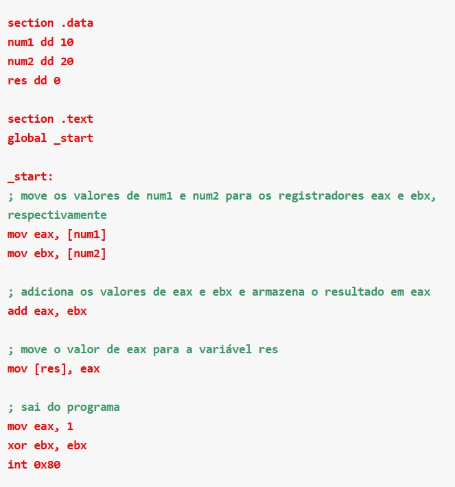
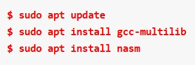
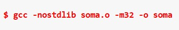
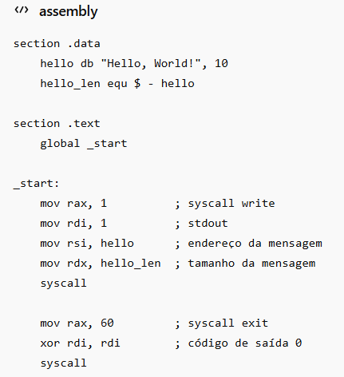

Quando a linguagem Assembly foi criada?
A linguagem Assembly é uma das linguagens de programação mais antigas que ainda são usadas hoje. Ela foi criada em meados da década de 1940, juntamente com os primeiros computadores eletrônicos, como o EDSAC (Electronic Delay Storage Automatic Calculator) e o ARC (Automatic Relay Computer). Naquela época, a programação era feita diretamente em linguagem de máquina, o que era muito trabalhoso e propenso a erros.
A linguagem Assembly foi desenvolvida para tornar a programação mais fácil e menos sujeita a erros, permitindo que os programadores escrevessem instruções em uma linguagem mais próxima da linguagem de máquina, mas com uma sintaxe mais fácil de entender pelos humanos.
O primeiro código no qual uma linguagem Assembly foi usada para representar instruções de código de máquina data do ano de 1947, sendo encontrado em um trabalho de nome Coding for A.R.C (Codificação para o computador Automatic Relay Computer), de Kathleen H. V. Britten e Andrew Donald Booth.
Desde então, a linguagem Assembly tem sido amplamente usada em áreas que exigem controle de baixo nível sobre o hardware, como sistemas operacionais, programação de dispositivos embarcados e processamento de imagens e os outros exemplos citados anteriormente.
O que é a linguagem Assembly?
A linguagem Assembly, comumente abreviada por ASM, é uma linguagem de programação de baixo nível que permite aos programadores escreverem código em instruções de baixo nível, próximas à linguagem de máquina, em vez de usar uma linguagem de alto nível mais abstrata, como C, Python ou Rust, por exemplo.
Trata-se de uma linguagem simbólica que representa as instruções em uma forma mnemônica (códigos de operação), que é mais fácil de entender para os programadores do que a representação binária das instruções. Por exemplo, em uma instrução Assembly, “ADD” pode representar a adição de dois números quaisquer.
Cada instrução Assembly representa uma operação específica que a CPU (Unidade Central de Processamento – Processador) deve executar, como por exemplo mover dados da memória principal para um registrador, realizar operações aritméticas ou executar desvios condicionais ou incondicionais.
A linguagem Assembly é específica para cada tipo de processador e arquitetura de computador, pois as instruções Assembly são diretamente executadas pelo hardware da máquina.
Embora a linguagem Assembly seja mais difícil de aprender e escrever do que as linguagens de programação de alto nível, ela permite um controle muito mais preciso e direto sobre o hardware do sistema, tornando-a ideal para desenvolvedores que precisam escrever software para sistemas embarcados, sistemas operacionais, drivers de dispositivos e outras aplicações que exigem acesso direto ao hardware da máquina, alta velocidade de execução e confiabilidade.
Porém, devido à sua complexidade e à necessidade de escrever códigos em instruções de máquina específicas, a linguagem Assembly não é tão comum quanto as linguagens de programação de alto nível, como C++, Java ou Python.
Quais as aplicações do Assembly hoje em dia?
Embora a linguagem Assembly seja considerada uma linguagem de programação de baixo nível e mais difícil de aprender do que as linguagens de programação de alto nível, ela ainda é amplamente usada em áreas especializadas da programação que exigem alto desempenho e controle preciso sobre o hardware. Algumas das aplicações atuais do Assembly incluem:
1. Desenvolvimento de sistemas operacionais: os sistemas operacionais são um exemplo clássico de aplicação de Assembly, pois exigem um controle preciso sobre o hardware da máquina e um alto desempenho para executar operações em tempo real.
2. Programação de dispositivos embarcados: muitos dispositivos embarcados, como microcontroladores, câmeras digitais, telefones celulares e dispositivos IoT, são programados em Assembly, pois exigem um controle muito preciso sobre o hardware e uma alta eficiência em termos de recursos.
3. Criação de drivers de dispositivos: os drivers de dispositivos são programas que permitem que o sistema operacional se comunique com os dispositivos de hardware, como placas de som, placas de vídeo e dispositivos de rede. Esses drivers são frequentemente escritos em Assembly, pois exigem um controle muito preciso sobre o hardware e um alto desempenho.
4. Processamento de imagens: as operações de processamento de imagens, como convolução, filtragem e detecção de bordas, são frequentemente executadas em Assembly para obter um desempenho máximo.
5. Programação de jogos eletrônicos: muitos jogos eletrônicos ainda são programados em Assembly para obter o máximo desempenho possível, especialmente em consoles de jogos com recursos limitados.
6. Criptografia: muitos algoritmos de criptografia são implementados em Assembly para garantir a segurança dos dados e garantir o desempenho máximo.
Como começar a programar em Assembly?
Começar a programar em Assembly pode parecer bastante complicado a princípio (e é), especialmente se não estivermos acostumados com linguagens de programação de alto nível, mas é possível aprender com bastante prática e paciência. Abaixo listo algumas dicas para quem deseja começar a aprender essa linguagem:
1. Escolha um conjunto de instruções: como mencionado anteriormente, cada arquitetura de processador tem seu próprio conjunto de instruções Assembly. Portanto, o primeiro passo é escolher o conjunto de instruções que você deseja aprender, com base no processador que você está usando (por exemplo, plataforma Intel x86_64).
2. Entenda a estrutura básica do programa Assembly: um programa Assembly é composto por uma série de instruções que são executadas sequencialmente. É importante entender como as instruções são organizadas em um programa Assembly.
3. Aprenda as instruções básicas: Obviamente, devemos começar com as instruções básicas, como movimento de dados, aritmética básica, operações lógicas, desvios condicionais e loops. Essas instruções são as bases do Assembly e são usadas em todos os programas Assembly.
4. Use um ambiente de desenvolvimento integrado (IDE): um ambiente de desenvolvimento integrado é um software que facilita a escrita e execução de código Assembly. Existem vários IDEs disponíveis, como o MASM da Microsoft, o NASM para sistemas Unix e o GCC para várias plataformas.
5. Pratique, pratique e pratique: a melhor maneira de aprender Assembly (ou qualquer outra linguagem de programação) é praticar escrevendo muito código. Comece com programas simples e, gradualmente, escreva programas mais complexos à medida que se torna mais confortável com a linguagem.
6. Recursos de aprendizagem: existem muitos recursos de aprendizagem disponíveis online, como tutoriais, livros e fóruns. Alguns recursos que posso recomendar incluem “Assembly Language Step-by-Step” de Jeff Duntemann e o site “Assembly Language Tutorials” de Ray Seyfarth – além, é claro, dos tutoriais do blog da Bóson Treinamentos em tecnologia!
Exemplo de código em Assembly

Explicação
Esse código começa definindo três variáveis: num1, num2 e res. Estas são declaradas como palavras duplas, o que significa que cada uma é um inteiro de 32 bits (4 bytes). A variável res é inicializada como zero.
Na seção .text, a função principal começa com o rótulo _start. O primeiro passo é mover os valores das variáveis num1 e num2 para os registradores eax e ebx, respectivamente. Isso é feito usando a instrução mov, que copia os dados de uma posição de memória para um registrador.
O próximo passo é adicionar os valores de eax e ebx usando a instrução add. O resultado da adição é armazenado em eax.
Por fim, o valor de eax é movido para a variável res usando a instrução mov. O programa sai do loop principal e termina usando as instruções mov, xor e int.
Como testar o programa sugerido
Podemos usar um compilador de Assembly para montar e executar o código fornecido anteriormente. Vejamos como fazer isso usando o compilador NASM* em um sistema Linux:
1. Crie um arquivo de texto chamado “soma.asm” usando um editor de sua preferência (vim, nano, emacs, etc.), e cole o código Assembly mostrado anteriormente.
2. Instale o NASM no seu sistema, se ainda não estiver instalado. No Linux Debian ou Ubuntu, podemos instalar o NASM digitando os seguintes comandos no terminal:

3. Compile o código Assembly usando o NASM. Para isso execute o seguinte comando no terminal (estadnbo no diretório onde o arquivo foi criado):
Este comando produz um arquivo objeto chamado “soma.o“
4. Precisamos ligar o arquivo objeto gerado pelo NASM com a biblioteca padrão do C usando o compilador GCC. Para isso, digite o seguinte comando no terminal:

Este comando produz um arquivo executável chamado “soma“.
5. Vamos executar o programa para testá-lo digitando o seguinte comando no terminal:
O resultado será armazenado na variável “result” e exibido no terminal. No caso do exemplo, o resultado será 30 (que é a soma de 10 e 20).
O NASM é uma ferramenta popular para desenvolvedores de software que precisam escrever código de baixo nível para fins de otimização ou para trabalhar com recursos de hardware específicos. Ele é amplamente utilizado em áreas como jogos, programação de sistemas e desenvolvimento de drivers de dispositivos.
Essa ferramenta fornece muitos recursos avançados para programação Assembly, como por exemplo suporte para macros, diretivas e expressões de pré-processador. Ele também inclui um depurador integrado que ajuda os programadores a depurar o código e entender o fluxo de execução do programa.
Agora, o famoso "Hello, World" em Assembly

Conclusão
O Assembly é uma linguagem antiga de baixo nível e, portanto, altamente específica e dependente da arquitetura do processador (CPU). Código em Assembly é muito mais difícil de ler e escrever do que código criado em linguagens de programação de alto nível, como Python, C# ou Java.
No entanto, a linguagem Assembly oferece controle absoluto sobre o hardware e pode ser usada em situações onde a eficiência é crítica, como na programação de drivers de dispositivo, sistemas embarcados ou no desenvolvimento de sistemas operacionais.
Youtube | Fundamentos do AssemblyUdemy | Cursos de Linguagem Assembly